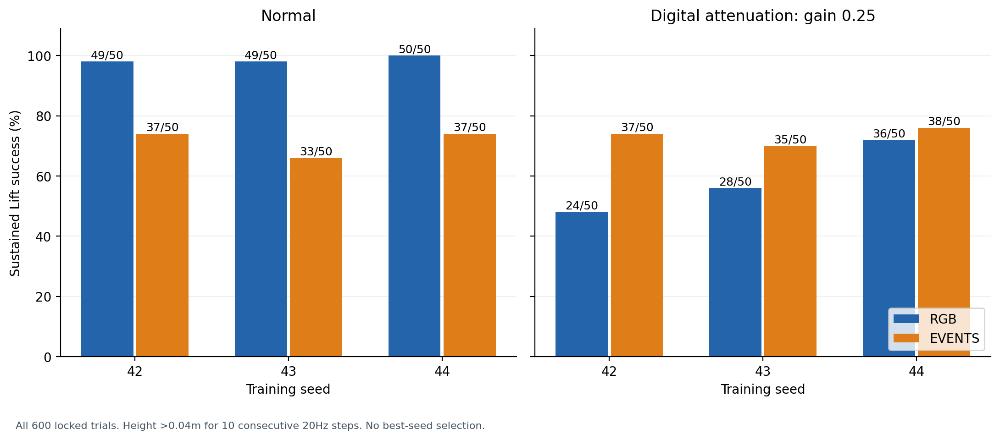
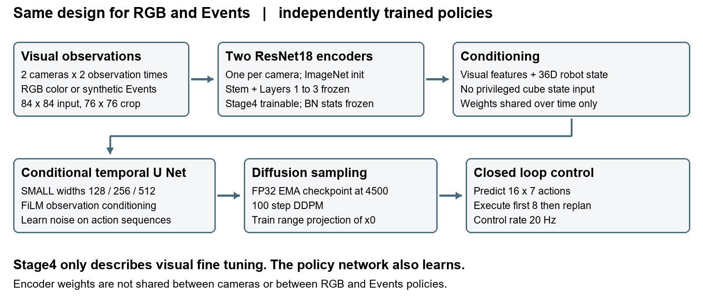

Adar Rubin
Supervisor progress review
16 October 2026
I implemented and evaluated RGB and synthetic Events Diffusion Policies on RoboMimic Lift. Six fixed trained models completed a locked 600-episode evaluation. RGB achieved higher sustained Lift success in normal lighting. Under fixed digital darkening, Events retained its performance and exceeded RGB by 14.67 percentage points. The result applies to this simulator, sensor-generation model and evaluation population.
Manipulation requires perception and coordinated actions over time. Learning from demonstrations offers a way to acquire such behavior without writing a separate controller for every situation. Diffusion Policy represents a distribution over action sequences through conditional denoising and executes a short action segment before planning again. This supports multiple plausible behaviors and sequential action generation [1].
Events cameras report changes in brightness rather than complete conventional frames. The literature motivates them for demanding sensing conditions through fine temporal resolution, low latency and high dynamic range [2]. Here, Events are synthesized from simulator images using V2E; physical sensor advantages are motivation, not findings of this experiment [3].
Locked final evaluation. Three training replications per modality; 50 shared reset/noise pairs per group. All 12 groups are included.

Current stage: models and final evaluation are complete; Notebook09 analysis ran on Colab CPU and its publication to Drive was verified. The immediate objective is supervisor review of the method, evidence and next steps.
Two separate policies use the same architecture and training contract. The diagram shows one policy design; it does not imply shared learned weights across modalities.

The original discussion considered DINO for RGB. I chose ResNet18 for both modalities to control the encoder design while fitting compute and time limits. Only Stage4 is fine-tuned inside each visual encoder; the earlier visual layers and BatchNorm running statistics are frozen. The policy network remains trainable. DINO was not benchmarked, so this choice does not establish that DINO would fail on Events.
| Component | Implemented contract |
|---|---|
| Task and observations | RoboMimic Lift; agentview and robot0_eye_in_hand cameras; current and previous visual observations; 36D robot-only proprioception. |
| Demonstrations | 200 demonstrations: 160 training and 40 validation; TAIL export provides 7,460 training and 1,806 validation windows. |
| Visual source | 200 Hz rendering from interpolated recorded states. This is visual reconstruction, not evidence of recorded 200 Hz physics or a physical Events sensor. |
| Events representation | Positive polarity, negative polarity and time surface in 50 ms windows. Synthetic V2E uses the frozen noiseless configuration. |
| Learning and execution | SMALL temporal U Net with FiLM conditioning; predict noise during training; 16-action prediction horizon, 8-action execution horizon, 20 Hz control. |
| Replications | Training seeds 42, 43 and 44, independently trained for RGB and Events; fixed FP32 EMA checkpoints at optimizer step 4500. |
RGB uses ImageNet normalization. Events uses train-only per-camera/channel z-score normalization; action and proprioception normalization follow the shared data contract. Matching the encoder type controls one source of variation but does not guarantee equal optimality for both representations. ImageNet initialization itself may favor conventional images.
The evaluation crosses three training replications, two modalities and two conditions, with 50 episodes per group: 3 x 2 x 2 x 50 = 600. Normal lighting is compared with a fixed digital source gain of 0.25 applied upstream of both RGB and V2E. It is a digital stress test, not a calibrated physical low-light experiment.
The six models use the same 50 reset seeds 1000 to 1049 and diffusion-noise seeds 4000 to 4049. The horizon is 300 control steps, or 15 simulated seconds. Sustained Lift means cube height greater than 0.04 m above the table for 10 consecutive 20 Hz steps. This is a geometric success criterion, not a proof of grasp attachment.
| Training seed | Normal RGB | Normal Events | Dark RGB | Dark Events |
|---|---|---|---|---|
| 42 | 49 / 50 | 37 / 50 | 24 / 50 | 37 / 50 |
| 43 | 49 / 50 | 33 / 50 | 28 / 50 | 35 / 50 |
| 44 | 50 / 50 | 37 / 50 | 36 / 50 | 38 / 50 |
| Pooled | 148 / 150 | 107 / 150 | 88 / 150 | 110 / 150 |
| Success rate | 98.67% | 71.33% | 58.67% | 73.33% |
RGB loses 40 percentage points under darkening; Events changes by +2 points. The small positive change for Events is not evidence that darkness improves it. The defensible finding is relative retention under this particular perturbation. Dark Events advantages are 26, 14 and 4 points for training seeds 42, 43 and 44 respectively, showing consistent direction with substantial variation in effect size.
| Events minus RGB contrast | Estimate | Conditional 95% interval |
|---|---|---|
| Normal lighting | -27.33 pp | [-38.00, -17.33] pp |
| Digital darkening | +14.67 pp | [+2.67, +26.67] pp |
| Difference in condition changes | +42.00 pp | [+28.67, +54.67] pp |
Intervals use the predeclared 4,000-draw paired shared-reset bootstrap, summary seed 98439. They are conditional on six fixed models and 50 reset/noise pairs. They do not include training-population uncertainty, physical sensor uncertainty or scene variation. The 150 trials per modality and condition are not 150 independently trained models.
Development progressed from dataset audit and deterministic splits through visual replay, V2E generation, paired training, closed-loop pilots and robustness evaluation. Early issues included incomplete end-of-demonstration observation coverage, inconsistent training and inference behavior, and unstable unrestricted action sampling. The TAIL export restored the late observation windows; this also changed the window population and normalization, so its effect was not isolated as a single-variable causal experiment.
The final implementation fixes the data contract, BatchNorm behavior, EMA checkpoint handling and FP32 inference. The sampler uses train-range x0 projection. Good denoising validation loss alone was not treated as proof of closed-loop success. Historical failures and the planned, unexecuted Notebook06 hyperparameter sweep remain documented.
Notebook09 reads one pinned core evidence archive, verifies identities and payload hashes, independently rescores all 600 episodes from 73,446 control rows, and reproduces the frozen paired bootstrap. The core contains 9,204 verified payloads. No models, raw dataset, simulator or new rollout are required for this analysis. Its Colab CPU session completed on16October and the saved Drive bundle was read back and verified.
The accompanying montage retains eight full episodes selected before outcomes: both modalities, both lighting conditions, reset seeds1000/1001 and training seed42. Playback is0.5x simulated-time speed. One RGB dark episode fails, while the matching Events episode succeeds; all other selected episodes also remain visible. This small presentation subset illustrates behavior and must not replace the600-episode statistics.
| Video area | Meaning |
|---|---|
| Left half | External simulator frontview of the recorded trajectory, rendered from saved states after policy execution. This is simulation footage. |
| Right top | Current agentview observation shown as RGB or a display rendering of Events. |
| Right bottom | Current wrist-camera observation, using the same modality. |
| Display scope | Center76 crops before z-score normalization, enlarged and encoded into lossy MP4. The policy also consumes a previous observation; the video does not expose the full exact input tensor archive. |
The experiment uses synthetic noiseless Events, a fixed scene, the standard object reset region and only three training replications per modality. An ideal log-intensity change can cancel a constant gain, which is a plausible mechanism for retained Events contrast; the actual V2E pipeline includes lin-log behavior and quantization. These results do not establish physical camera performance, a universal modality ranking, or success under all perturbations. Earlier development stresses did not show an Events advantage for every condition.
The dates below record the initial conversation as recalled by Adar. They are provisional and may be revised at the next meeting. The supervisor has so far seen the idea, not the implementation, architecture or results. The approximately four-page document length is also an uncertain recollection; a concise main document plus a separate technical appendix is a proposed format.
| Initial target | Deliverable | Status as of16October |
|---|---|---|
| 25 October | Sketch, potentially a small model | ✓ Exceeded in implementation scope: trained RGB/Events policies, three training pairs and completed final600. |
| Early December | Working model and results | ✓ Achieved for the current Lift setup. Broader generalization and an additional task remain exploratory. |
| Mid December | Written account of motivation, methods, comparison and conclusions | This progress report and evidence are ready for discussion; final academic format and scope require supervisor confirmation. |
| Early January | Paper written | Planned; exact submission date and requirements remain to be confirmed. |
| During January | Project completion | Target; final writing, supervisor feedback and defense preparation remain. |
The meeting should confirm whether the controlled ResNet18 comparison and synthetic Events scope address the research objective; whether the existing evidence is sufficient for the planned degree report; and what additional evidence is most valuable within the remaining time. Document length, format and binding dates should be confirmed directly.
The latest priority is a small feasibility screen for one additional robustness scenario, together with a slightly more complex task if viable. Broadening object positions and initial robot configurations remains a reserve direction when time permits. The intention is to screen cheaply, learn from negative results and expand only a promising direction, rather than fund a large sweep of every candidate.
The current Lift evidence is preserved. New exploratory runs must use a separately named study and untouched seed sets; no checkpoint, gain or architecture selection will use the exposed final evaluation seeds. Any confirmed claim after screening needs an independent held-out evaluation, including all relevant failures.
| Direction | First gate | Expansion criterion |
|---|---|---|
| Additional robustness scenario | Specify an exposure-aware motion-blur model. Document RGB exposure integration and the Events source/noise assumptions before a small paired development screen. | Proceed only if the sensing assumptions are credible and the screen is informative. No guarantee of an Events advantage; report all screened conditions. |
| Second manipulation task | Can pick-and-place is the first candidate; inspect raw data, cameras, robot/action contract and source replay compatibility on CPU [4]. | Only then price a small paired RGB/Events pilot. Working Lift code does not establish convergence or adequate coverage on Can. Square is an alternative, not a parallel commitment. |
| Wider reset region | Reserve study: separate object-position expansion beyond +/-3cm from increased robot joint initialization noise. Combine only after separate diagnostics [5]. | Use valid placements and paired initial states; do not attribute arbitrary unreachable/colliding resets to perception. No claim of novelty over prior work without a specific literature audit. |
Compute gate. No new experiment has been executed for these proposals. Before a GPU pilot, inspect the actual remaining Colab compute units and runtime charging rate, then estimate cost in those native units. The project cap is200units per calendar month, resetting at month start; paid top-ups are not authorized. A wall-clock GPU-hour estimate is not a compute-unit estimate. Save and verify outputs, release the runtime immediately after the run and verify actual disconnection.
[1] Chi et al. Diffusion Policy. RSS2023 and subsequent journal version. https://diffusion-policy.cs.columbia.edu/
[2] Gallego et al. Event-based Vision A Survey. https://arxiv.org/abs/1904.08405
[3] SensorsINI. V2E implementation and sensor model documentation. https://github.com/SensorsINI/v2e
[4] RoboMimic dataset and task documentation. https://robomimic.github.io/study/ and https://robomimic.github.io/docs/v0.2/datasets/robomimic_v0.1.html
[5] RoboSuite1.5 initialization noise and placement samplers. https://robosuite.ai/docs/simulation/environment.html and https://robosuite.ai/docs/source/robosuite.utils.html
Locked study: d200_tail_final_normal_dark_v1_fed681d7b085
Analysis: d200_tail_final600_analysis_v1_eabc0eae0aa4
Actual Colab analysis session:20261016T112007Z_4ca5e09e
Core SHA256:e88a08e3552519567a90165d463737345ba9f04df1fcf1e15bbeb5914b8a8315